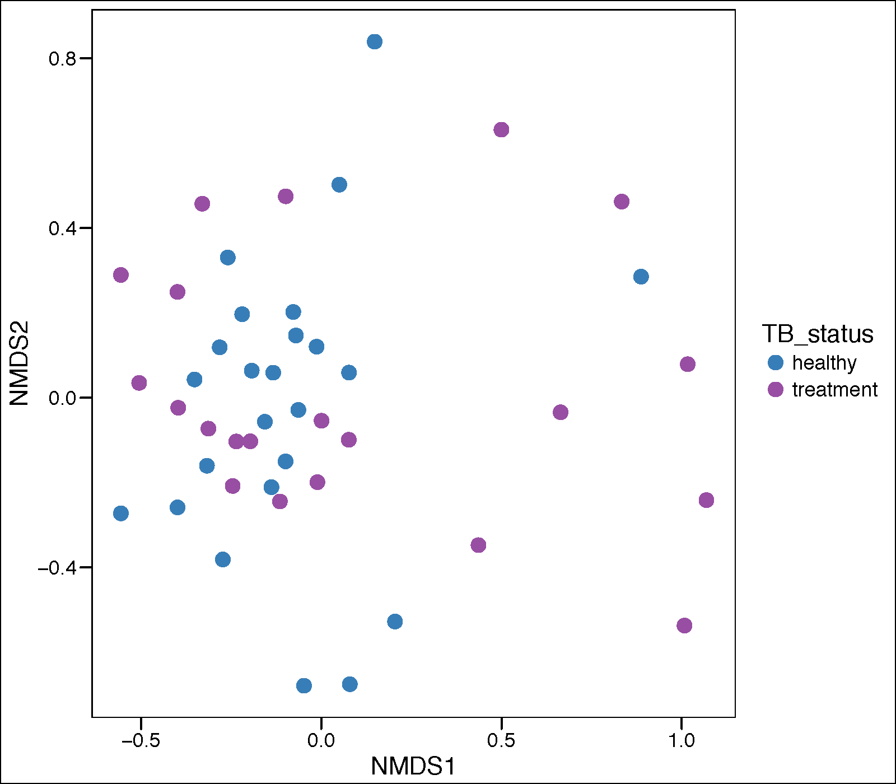
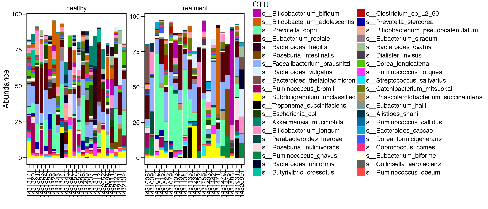
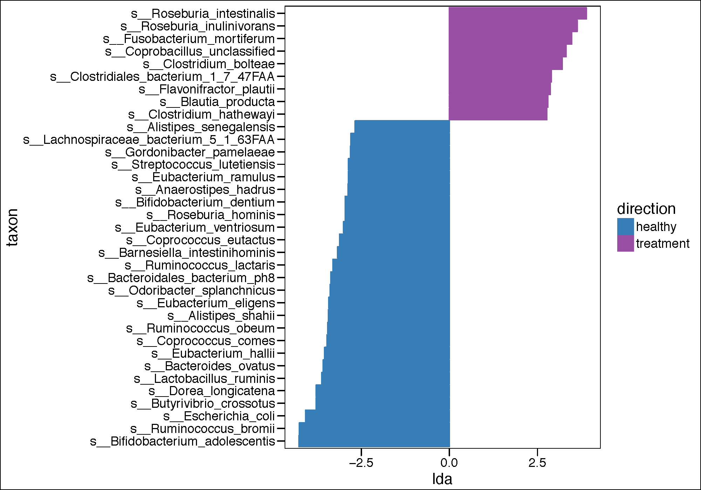
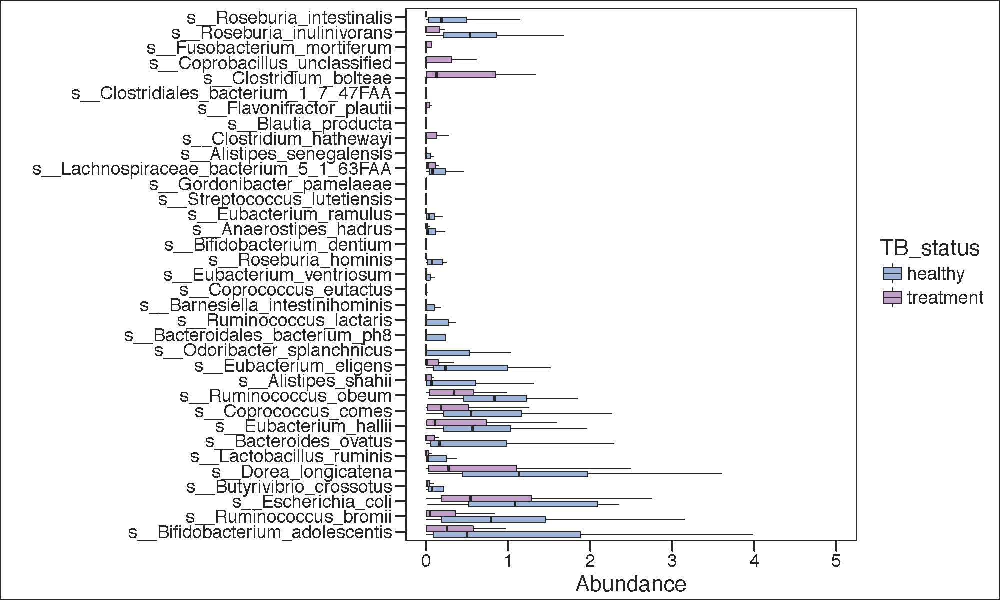
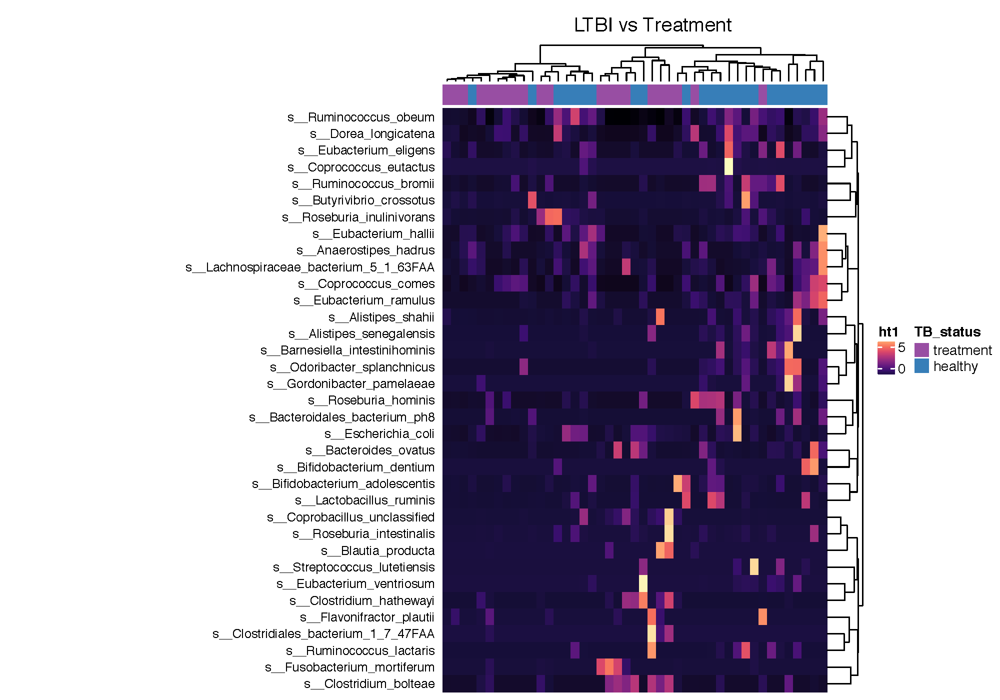

Loading the data
rm (list = ls())
library(phyloseq);library(ggplot2);library(gridExtra);library(RColorBrewer);library(colorspace)
library(lattice);library(plyr);library(KEGGREST);library(pracma);library(ggthemes);library(pheatmap)
library(ComplexHeatmap);library(BiocParallel);library(genefilter);library(DESeq2);library(tidyr)
library(viridis);library(ggstance);library(data.table);library(pracma);library(RbioRXN);library(ggplot2)
setwd("~/Desktop/metagenomics/TBRU_treatment/")
register(MulticoreParam(30))
asinTransform <- function(p) { asin(sqrt(p)) }
mainDir <- "../metagenomics/"
subDir <- "metaphlan_profiling_treatment"
dir.create(file.path(mainDir, subDir), showWarnings = TRUE, recursive = TRUE)
results_folder <- paste(mainDir,subDir,sep="")
mtph_subDir <- "metaphlan_profiling/"
dir.create(file.path(mainDir, mtph_subDir), showWarnings = TRUE, recursive = TRUE)
mtph_results_folder <- paste(mainDir,mtph_subDir,sep="")
mtph_dat <- read.csv("metaphlan2_taxonomic_table_joined.tsv",sep="\t")
mtph <-mtph_dat
rownames(mtph) <-mtph$X.SampleID
mtph$X.SampleID<-NULL
mtph_otudata <-otu_table(mtph,taxa_are_rows = TRUE)
mtph_taxmat <- matrix(sample(letters, nrow(mtph_otudata)/10, replace = TRUE), nrow = nrow(mtph_otudata), ncol = 7)
rownames(mtph_taxmat) <- rownames(mtph_otudata)
colnames(mtph_taxmat) <- c("Domain", "Phylum", "Class", "Order", "Family", "Genus", "Species")
mtph_taxmat <-tax_table(mtph_taxmat)
mtph_phy <- phyloseq(mtph_otudata, mtph_taxmat)
Import the metaphlan data to phyloseq
metadata.file <- "TBRU_Metadata_May2017.csv"
metadata <- read.csv(metadata.file,na.strings=c("N/A","99999"))
metadata[is.na(metadata)]<-"99999"
metadata$sample<-gsub("-",".",metadata$sample)
samp <- metadata %>% data.frame()
rownames(samp)<-metadata$sample
snames<-as.data.frame(do.call('rbind',strsplit(sample_names(mtph_phy),"_")))[,1]
sample_names(mtph_phy)<-snames
sample_data(mtph_phy)<-samp
# subsettings
mtph_phyIGRA_pos_active <- subset_samples(mtph_phy,!is.na(IGRA) & IGRA!="")
mtph_phyIGRA_pos_active <- subset_samples(mtph_phyIGRA_pos_active,!is.na(Group6_TB_category) & Group6_TB_category!="cured")
mtph_phyIGRA_pos_active <- subset_samples(mtph_phyIGRA_pos_active,!is.na(Group6_TB_category) & Group6_TB_category!="family_contact")
mtph_phyIGRA_pos_active <- subset_samples(mtph_phyIGRA_pos_active,!is.na(Group6_TB_category) & Group6_TB_category!="family_LTBI")
# keep only <38 years old in age
mtph_phyIGRA_pos_active <- subset_samples(mtph_phyIGRA_pos_active,age<=38)
splitted_names_tbru<-strsplit(taxa_names(mtph_phyIGRA_pos_active),"\\|")
splitted_names_tbru_length<-lengths(splitted_names_tbru)
taxa_names(mtph_phyIGRA_pos_active)[splitted_names_tbru_length==7]
mtph_phyIGRA_pos_active.speclevel<-prune_taxa(taxa_names(mtph_phyIGRA_pos_active)[splitted_names_tbru_length==7],mtph_phyIGRA_pos_active)
taxa_names(mtph_phyIGRA_pos_active.speclevel)<-do.call('rbind',strsplit(taxa_names(mtph_phyIGRA_pos_active.speclevel),"\\|"))[,7]
Principle corrdinate analysis
pdf(paste(mtph_results_folder,'pca_plot_treatment.pdf',sep="/"),height = 7, width = 10)
mtph_GP.ord <- ordinate(mtph_phyIGRA_pos_active.speclevel, "NMDS", "bray")
Palette_LTBI_treatment <- c("#377eb8","#984ea3")
mtph.p.pca <- plot_ordination(mtph_phyIGRA_pos_active.speclevel, mtph_GP.ord, type="samples",
color="TB_status")
mtph.p.pca <- mtph.p.pca + geom_point(size=4) +
theme_base() + scale_color_manual(values=c(Palette_LTBI_treatment))
print(mtph.p.pca)
dev.off()

assignCols <- function(names,selection) {
mymap<-list()
availableCols <-c("#000000", "#FFFF00", "#1CE6FF", "#FF34FF", "#FF4A46", "#008941", "#006FA6", "#A30059",
"#FFDBE5", "#7A4900", "#0000A6", "#63FFAC", "#B79762", "#004D43", "#8FB0FF", "#997D87",
"#5A0007", "#809693", "#FEFFE6", "#1B4400", "#4FC601", "#3B5DFF", "#4A3B53", "#FF2F80",
"#61615A", "#BA0900", "#6B7900", "#00C2A0", "#FFAA92", "#FF90C9", "#B903AA", "#D16100",
"#DDEFFF", "#000035", "#7B4F4B", "#A1C299", "#300018", "#0AA6D8", "#013349", "#00846F",
"#372101", "#FFB500", "#C2FFED", "#A079BF", "#CC0744", "#C0B9B2", "#C2FF99", "#001E09",
"#00489C", "#6F0062", "#0CBD66", "#EEC3FF", "#456D75", "#B77B68", "#7A87A1", "#788D66",
"#885578", "#FAD09F", "#FF8A9A", "#D157A0", "#BEC459", "#456648", "#0086ED", "#886F4C",
"#34362D", "#B4A8BD", "#00A6AA", "#452C2C", "#636375", "#A3C8C9", "#FF913F", "#938A81",
"#575329", "#00FECF", "#B05B6F", "#8CD0FF", "#3B9700", "#04F757", "#C8A1A1", "#1E6E00",
"#7900D7", "#A77500", "#6367A9", "#A05837", "#6B002C", "#772600", "#D790FF", "#9B9700",
"#549E79", "#FFF69F", "#201625", "#72418F", "#BC23FF", "#99ADC0", "#3A2465", "#922329",
"#5B4534", "#FDE8DC", "#404E55", "#0089A3", "#CB7E98", "#A4E804", "#324E72", "#6A3A4C",
"#83AB58", "#001C1E", "#D1F7CE", "#004B28", "#C8D0F6", "#A3A489", "#806C66", "#222800",
"#BF5650", "#E83000", "#66796D", "#DA007C", "#FF1A59", "#8ADBB4", "#1E0200", "#5B4E51",
"#C895C5", "#320033", "#FF6832", "#66E1D3", "#CFCDAC", "#D0AC94", "#7ED379", "#012C58")
mymap[[1]]<-rev(availableCols[match(intersect(names,selection),names)])
mymap[[2]]<-intersect(names,selection)
mymap
};
most_abundant_number <-40
topN = most_abundant_number
most_abundant_taxa = sort(taxa_sums(mtph_phyIGRA_pos_active.speclevel), TRUE)[1:topN]
GP = prune_taxa(names(most_abundant_taxa), mtph_phyIGRA_pos_active.speclevel)
mGPr <- psmelt(GP)
mycol <- assignCols(unique(mGPr$OTU),unique(mGPr$OTU))
pdf(paste(results_folder,'barplot_all.pdf',sep="/"),height = 6, width = 14)
p.bar<-ggplot(data=mGPr,aes(Patient.ID, Abundance, fill=OTU))+
geom_bar(stat = "identity") +
theme_base()+
theme(axis.text.x=element_text(angle=90,hjust=1,vjust=0.5)) +
scale_fill_manual(values = mycol[[1]],breaks=mycol[[2]]) +
facet_wrap(~TB_status, scales="free")+
xlab("")
print(p.bar)
dev.off()

Run LEfSe on Treatment vs LTBI
system("echo $PATH")
# # #aquire sample data from phy
phy.lefse<-mtph_phyIGRA_pos_active.speclevel
class <- "TB_status"
subclass<-FALSE
subject<-"sample"
anova.alpha<-0.05
wilcoxon.alpha<-0.05
lda.cutoff<-2.0
wilcoxon.within.subclass <- TRUE
one.against.one <- T
mult.test.correction <- 0
make.lefse.plots <- FALSE
by_otus <- FALSE
#
sample.data <- sample_data(phy.lefse) %>% data.frame(stringsAsFactors = FALSE)
rownames(sample.data) <- sample.data$sample
#
keepvars <- c("sample","TB_status")
keepvars <- unique(keepvars[!is.na(keepvars)])
lefse.samp <- sample.data[, keepvars]
#
sample0 <- t(lefse.samp) %>% as.matrix()
colnames(sample0) <- sample0[1,]
sample0 <- as.data.frame(sample0)
#
data0 <- otu_table(phy.lefse) %>% as.data.frame()
data1 <- data0 %>% as.data.table(keep.rownames=T)
sample1 <- sample0 %>% as.data.table(keep.rownames=T)
common <- intersect(colnames(data1), colnames(sample1))
pre.lefse <- rbind(sample1, data1,fill=T) %>% t() %>% na.omit() %>% t()
#
write.table(pre.lefse,file = paste(results_folder,"lefse.txt",sep=""),sep = "\t",row.names = FALSE,col.names = FALSE,quote = FALSE)
#
opt.class <- paste("-c", which(keepvars %in% class))
opt.subclass <- ifelse(is.na(subclass), "", paste("-s", which(keepvars %in%
subclass)))
opt.subject <- ifelse(is.na(subject), "", paste("-u", which(keepvars %in%
subject)))
format.command <- paste(paste("format_input.py ",results_folder,"lefse.txt ",results_folder,"lefse.in",sep=""),
opt.class, opt.subject, "-o 1000000")
system(format.command)
#
lefse.command <- paste(paste("~/miniconda2/bin/python ~/lefse/run_lefse.py ",results_folder,"lefse.in " ,results_folder, "lefse.res",sep=""),
"-a", anova.alpha, "-w", wilcoxon.alpha, "-l", lda.cutoff,
"-e", as.numeric(wilcoxon.within.subclass), "-y", as.numeric(one.against.one),
"-s", mult.test.correction)
lefse.command
system(lefse.command)
lefse.out <- read.table(paste(results_folder,"lefse.res",sep=""), header = FALSE, sep = "\t")
names(lefse.out)<-c("taxon","log.max.pct","direction","lda","p.value")
(lefse.out<-na.omit(lefse.out))
pdf(paste(results_folder,'lda_plot_LEFSE.pdf',sep=""),height = 7, width = 10)
if(length(unique(lefse.out$direction))<3){
lefse.out$lda[lefse.out$direction==unique(lefse.out$direction)[1]] <-
-1*lefse.out$lda[lefse.out$direction==unique(lefse.out$direction)[1]]
}
lefse.out$taxon<-factor(lefse.out$taxon,levels=lefse.out$taxon[order(lefse.out$lda)])
g1<-ggplot(data=lefse.out,aes(x=taxon,y=lda,color=direction,fill=direction))+
geom_bar(stat="identity")+
coord_flip()+
theme_base()
if(length(unique(lefse.out$direction))<3){
g1<-g1+scale_color_manual(values=c(Palette_LTBI_treatment))+
scale_fill_manual(values=c(Palette_LTBI_treatment))
}
print(g1)
dev.off()
print(g1)

ltk<-as.character(lefse.out$taxon)
phy_ra_ltk<-prune_taxa(ltk,phy.lefse)
phy_ra_ltk_m<-psmelt(phy_ra_ltk)
phy_ra_ltk_m$OTU<-factor(phy_ra_ltk_m$OTU, levels=lefse.out$taxon[order(lefse.out$lda)])
g2<-ggplot(phy_ra_ltk_m,aes(x=OTU,
y=Abundance,color=TB_status,
fill=TB_status))+
geom_boxplot(position=position_dodge(),
colour="black", # Use black outlines,
size=.3,alpha=0.5,outlier.shape = NA) + # Thinner lines
theme_base()+
xlab("")+
coord_flip()+
scale_y_continuous(limits = c(0,5))
if(length(unique(lefse.out$direction))<3){
g2<-g2+scale_color_manual(values=c(Palette_LTBI_treatment))+
scale_fill_manual(values=c(Palette_LTBI_treatment))
}
print(g2)
pdf(paste(results_folder,'significant_LEFSE.cured.pdf',sep=""),height = 6, width = 10)
print(g2)
dev.off()

Make a heatmap with the LEfSe results
phy_pos_cured_no_treat_ra_sset_sign<-mtph_phy_ra_ltk
sig_data_c<-otu_table(phy_pos_cured_no_treat_ra_sset_sign)
genotype_colors<-rep("darkred",length(sample_data(phy_pos_cured_no_treat_ra_sset_sign)$TB_status))
genotype_colors[which(sample_data(phy_pos_cured_no_treat_ra_sset_sign)$TB_status=="healthy")]<-"darkblue"
dist.pear<-function(x) as.dist(1-cor(t(x)))
mat<-as.matrix(as.data.frame(sig_data_c))
mat2<-scale(t(mat), scale = TRUE, center = TRUE)
mat2<-t(mat2)
mat2[mat2==0]<-NA
annotations<-data.frame(sample_data(phy_pos_cured_no_treat_ra_sset_sign)[,c("TB_status")])
names(annotations)<-c("TB_status")
color_col = list(TB_status = c("treatment" = "#984ea3","healthy" = "#377eb8"))
ha_column = HeatmapAnnotation(annotations,col = color_col)
pdf(paste(results_folder,'in_house_heatmap_pathway_significant_abundance_complex_2.pdf',sep=""),height = 7, width = 10)
ht1 <- Heatmap(mat2, name = "ht1", column_title = "LTBI vs Cured", top_annotation = ha_column,
clustering_distance_columns = "minkowski",
clustering_method_columns = "ward.D",row_names_side = "left",
km=1, color_space = "LAB",col=magma(11), row_dend_side="right",
show_column_names = "FALSE", width=4, row_names_max_width = unit(8, "cm"),
row_names_gp = gpar(fontsize = 9), cluster_columns = T,
na_col="white",heatmap_legend_param = list(at = c(0,5),color_bar = "continuous"))
ht_list = ht1
padding = unit.c(unit(2, "mm"), grobWidth(textGrob("jnbkjsddjdjd_annotation_name")) - unit(1, "cm"),
unit(c(2, 2), "mm"))
draw(ht_list, padding = padding)
dev.off()
